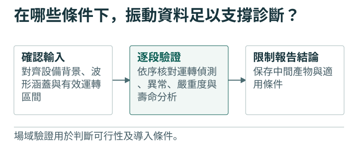
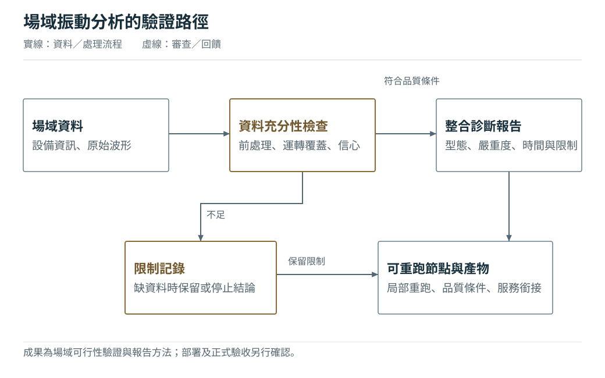

場域 POC
設備振動分析驗證
以場域設備資料檢驗振動診斷及整合報告可行性，記錄資料限制和導入條件。
- 負責範圍
- 主導設備資訊、前處理、運轉偵測、故障分類、嚴重度及 RUL 的驗證流程，以 notebook 核對數值與判讀。
- 成果與狀態
- 完成場域診斷與可重用報告方法，將資料覆蓋不足及低信心結果納入降級條件，供後續報告服務整合。
- 紀錄時間
- 2026 年 POC 紀錄
情境與目標
資料覆蓋、運轉狀態與抽樣方式影響診斷，需驗證報告結論成立的條件。

場域驗證用於判斷可行性及導入條件。（點圖放大）系統架構與流程
架構說明
- 輸入
- 場域設備資料、基本資訊與原始波形。
- 處理方式
- 依前處理、運轉偵測、分類、嚴重度及壽命的順序驗證，檢查覆蓋與信心。
- 產出
- 整合診斷報告與可重用的方法，留下中間產物及資料限制。
流程圖

成果為場域可行性驗證與報告方法；部署及正式驗收另行確認。（點圖放大）關鍵設計取捨
先定義診斷能說到哪裡，再產出報告
挑戰原始資料覆蓋及運轉占比不同，報告若固定輸出分類與壽命，會製造資料不支持的確定性。
方法與取捨將資料充分性、運轉覆蓋及擬合信心作為可視降級條件。我主導診斷鏈與品質邊界，AI agents及skills協助處理資料、產生可追溯報告產物。
結果建立由設備與資料事實走到診斷、嚴重度及時間的整合流程；缺資料時保留限制而非強行結論。
一次性分析怎樣留下可重用的工作方式
挑戰客戶分析包含基本資訊、資料前處理及多段診斷；只靠臨時對話不利於重跑及一致審查。
方法與取捨先用可重用的分析步驟驗證品質規則，再轉成可編排流程。我主導流程及判讀規則，驗證局部重跑、資料不足時的處理與中間結果，再銜接報告服務。
結果留下從POC到可重用報告工作的演進路徑；後續服務的功能整合範圍依報告專案核對。
成果與驗證範圍
實際產出
完成場域診斷與可重用報告方法，將資料覆蓋不足及低信心結果納入降級條件，供後續報告服務整合。
驗證與限制
場域驗證用於確認分析可行性與導入條件，產品部署及驗收另行推進。